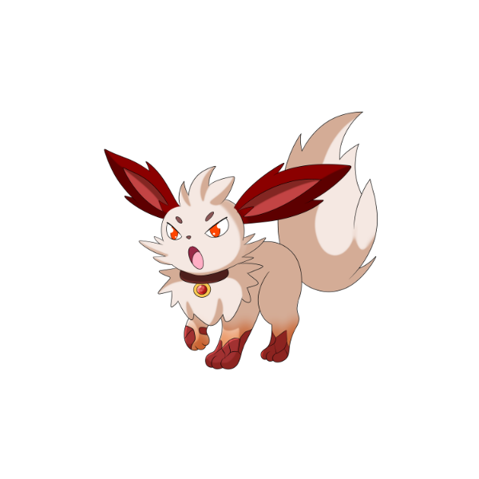
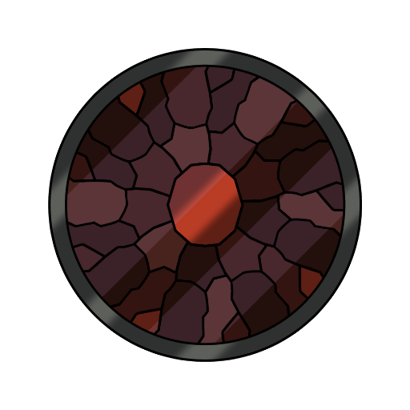
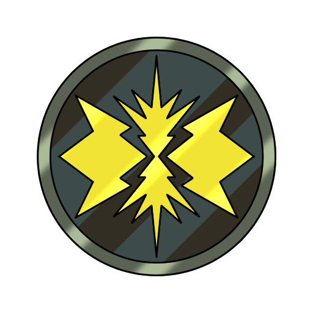
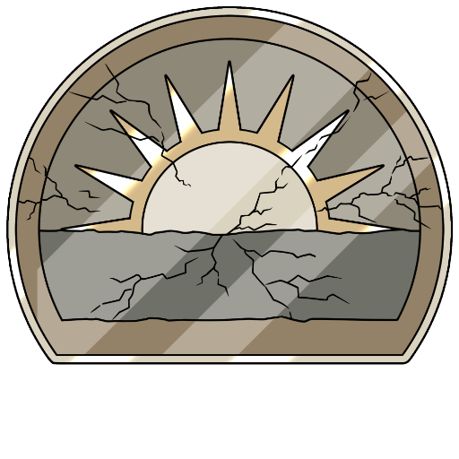
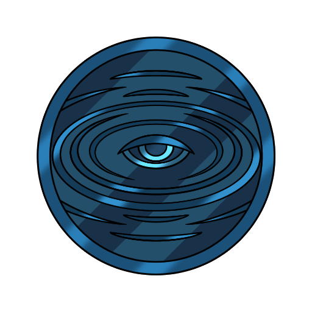
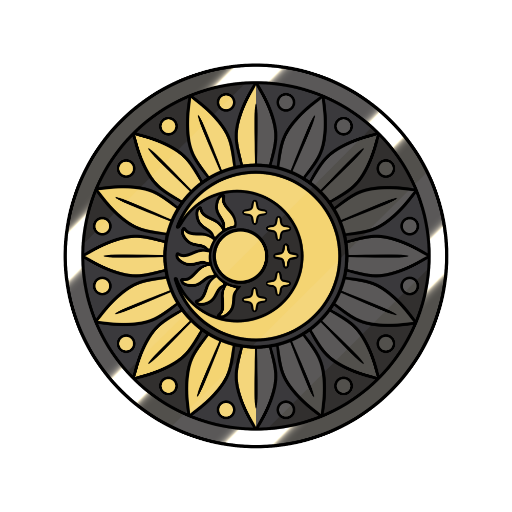
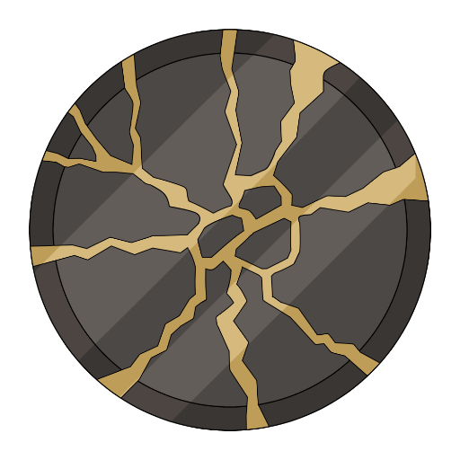

MARTE
Umore e Stress
Sei condizioni dell'umore e dello stress, una per scheda.
SILEN SU MARTE

Silen
La forma di Silen dedicata a questa collezione.
Silen in forma marziana accompagna la collezione sull'umore e sullo stress: stanchezza, tensione, umore depresso e oscillazioni dell'umore. Le sei schede sono burnout, stress, distimia, depressione, disturbo bipolare e anedonia.LE LUNE DI MARTE
Sei condizioni dell'umore e dello stress, una per scheda.
Ogni scheda ha due voci: Cos'è, la spiegazione chiara, e La luna racconta, come si vive e cosa può aiutare. Divulgazione: non sostituisce il parere di un professionista. Le storie stanno nei libri.

Burnout
Non è debolezza: è aver reggito troppo a lungo.
Il burnout è uno stato di esaurimento fisico ed emotivo legato a uno stress prolungato, tipicamente al lavoro o alla cura di qualcuno. Si manifesta con stanchezza profonda, distacco e calo della motivazione: l'Organizzazione Mondiale della Sanità lo descrive come un fenomeno occupazionale, non come una debolezza personale.
Questa illustrazione è riprodotta su calamite, spille e adesivi.
Vai su Redbubble
Stress
Utile a piccole dosi. Logorante quando non si spegne.
Lo stress è la reazione del corpo e della mente a una pressione percepita come eccessiva. A piccole dosi è normale e perfino utile; quando diventa cronico influenza sonno, umore, memoria e salute fisica, e merita di essere ascoltato prima di logorare.
Questa illustrazione è riprodotta su calamite, spille e adesivi.
Vai su Redbubble
Distimia
Non è il proprio carattere: è una condizione che dura anni.
La distimia, oggi chiamata disturbo depressivo persistente, è una forma di depressione lieve ma continua: un umore deflesso che accompagna la vita per almeno due anni. Non è tristezza passeggera — spesso si impara a conviverci senza riconoscerla.
Questa illustrazione è riprodotta su calamite, spille e adesivi.
Vai su Redbubble
Depressione
Non si supera con la forza di volontà.
La depressione è un disturbo dell'umore che altera il modo di sentire, pensare e vivere il quotidiano: tristezza persistente, perdita di interesse, stanchezza, difficoltà di concentrazione. È una condizione clinica riconosciuta, non una fase che si supera con la forza di volontà, e con il giusto sostegno si può affrontare.
Questa illustrazione è riprodotta su calamite, spille e adesivi.
Vai su Redbubble
Disturbo Bipolare
Non sono alti e bassi: sono fasi cliniche.
Il disturbo bipolare è un disturbo dell'umore in cui si alternano fasi di forte attivazione ed euforia (mania o ipomania) e fasi depressive. Non significa semplicemente avere alti e bassi: è un quadro clinico riconoscibile, che si accompagna con percorsi di cura specifici.
Questa illustrazione è riprodotta su calamite, spille e adesivi.
Vai su Redbubble
Anedonia
Non è indifferenza: è la perdita del piacere.
L'anedonia è la difficoltà, o l'incapacità, a provare piacere per cose che prima interessavano. È un sintomo, non una diagnosi a sé: può comparire nella depressione, in alcune condizioni neurologiche o dopo periodi di forte stress.
Questa illustrazione è riprodotta su calamite, spille e adesivi.
Vai su RedbubbleINFORMAZIONI E LICENZE
Una Voce Dal Profondo è un progetto di divulgazione psicologica e narrazione. Le opere sono tutelate da diritto d'autore: i libri escono su Amazon e le illustrazioni sono riprodotte su oggetti da Redbubble — entrambe le piattaforme gestiscono la vendita e mi corrispondono le royalties. Per collaborazioni, richieste professionali o licenze:
Iscriviti alla nostra mailing list
Novità su libri, storie e nuove lune: qualche email, mai di più.
Se il modulo qui sopra non funziona, apri l'iscrizione in una nuova scheda
Ogni riproduzione non autorizzata è vietata.